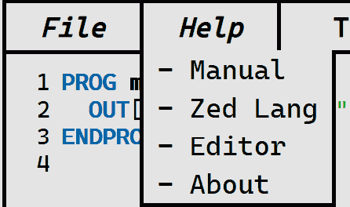
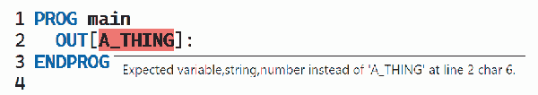

Introduction
The Zed Programming Language is a simple programming language that compiles to Python. It was created as an exercise in building a functioning compiler, and an Interactive Development Environment.
The whole environment is self-contained, and is a simple one-click-to-run package.
License
Copyright (C) 2020 - Oliver Lenehan - GNU GPLv3.0
This program is free software: you can redistribute it and/or modify it under the terms of the GNU General Public License as published by the Free Software Foundation, either version 3 of the License, or (at your option) any later version.
This program is distributed in the hope that it will be useful, but WITHOUT ANY WARRANTY; without even the implied warranty of MERCHANTABILITY or FITNESS FOR A PARTICULAR PURPOSE.
See the GNU General Public License Version 3 for the full license.
Table of Contents
Installation
The Zed Programming Language Interactive Development Environment is designed to be easy to set up. The software package comes ready in a compressed-zip folder. Simply extract the zip folder anywhere on your computer, and run the zed.exe binary. The editor should then open.
If it does not start, navigate to http://localhost:2020/zeditor.html.
Zed has been tested to work on Windows 10 v1903, with Google Chrome v83 as the default browser.
Source code files are tested to be recognised if they use Windows (CRLF) or Linux (LF) line endings.
TCP Port 2020 must be available for the IDE to start.
Zed uses the following dependencies internally (which do not need to be installed): Deno (v1.1.0), Python 3 (v3.8.3) and the Deno Standard Library (v0.57.0).
Included alongside the zed.exe binary is this manual, "The Zed Programming Language",
and a copy of the software licenses for Zed and any other software used as a dependency.
Also included are relevant documents to the Software Assignment: Requirements Report,
Design Report, Evalutaion Report, and Log Book.
The Zed Compiler produces Python 3 files as "Object Code". To be able to run them
independently of the software package, you must have Python 3 installed on your system.
It is important to note, that Zed is a fully self-contained software package, and as such
does not need the user to install any other programs for it to function correctly.
Language Guide
Your First Program
PROG Introduction
OUT["Hello, World"]:
ENDPROG
What makes up a Zed Program?
There are lots of components that make up the
Zed Programming Language. Most important of
them is the PROG declaration: this
marks the beginning and end of your program, and
also names your program (using A-Z a-z _). It contains a sequence of
statements ending with ':', or control structures
that are the logic of your program.
Zed has two statements: the OUT[]:
statement and the assignment statement (= A1 1:) or (= A1 IN["Value: "]:).
These are the basics of input and output in Zed.
Zed features five control structures: the WHEN loop,
the REPEAT loop, the FOR loop,
the IF selection and the SWITCH selection.
For performing mathematical operations, Zed features
five operators: plus (+), minus (-), multiply (*), divide (/) and modulus (%).
These are used at the end of assignment statements
on variables that already exist, e.g. = A1 2 /: to
divide A1 by 2.
IF selections, WHEN loops and
REPEAT loops all use conditions to determine how they run.
There are five comparison operators: less-than (<), greater-than (>),
less-than-or-equal-to (<=), greater-than-or-equal-to (>=), and is-equal (==).
Conditions follow a special order: <operator> <value | condition> <value | condition>.
Such an example is as thus: == 1 1, which would evaluate to a logical-TRUE.
Zed also provides three logical operators: logical-AND (&&), logical-OR (||),
and logical-NOT (!). Logical-NOT is special because it sits infront
of a condition to invert its truthiness. ! && == 1 1 == 2 2 combines
two is-equal conditons joined by logical-AND and inverted by logical-NOT, which means
that it evaluates to logical-FALSE;
Of course, none of the above features would be possible without
data to drive it. Data in Zed consists of Values (Numbers and Strings) and
Variables. A Number is either a postive or negative integer or decimal
(42,-1,3.14 are all valid examples).
A String is simply a sentence or piece of text created by wrapping the text
(valid chars, excluding the double quotes; " !#$%&'()*+,-./0123456789:;<=>?@ABCDEFGHIJKLMNOPQRSTUVWXYZ[\]^_`abcdefghijklmnopqrstuvwxyz{|}~") inside double-quotes ("),
e.g. "What is the airspeed velocity of an unladen swallow?".
A Variable is used to store and hold data to be modified later, they can be identified
by the use of a single capital letter, followed by one or more digits, e.g. P1.
When documenting some code, comments come in handy to better descrbe certain decisions.
Zed includes comments, starting with a #, which turn the rest of the line into commentary written by the developer.
OUT Statement
This statement, is a procedure used to output strings, numbers and variables to the screen. Multiple items can be joined together using a plus (+).
PROG output
OUT["One"]:
OUT[2]:
= A1 42:
OUT["A1 is "+A1]:
ENDPROG
Assignment Statement
This statement allows for user input, and for giving values to variables.
A simple assignment consists of a target variable, and an operand of either a
variable, number or string. Allowing user input of strings or numbers is as
simple as replacing the operand with an IN[] procedure, which takes
parameters as a prompt to the user.
Much like the OUT[] procedure, the IN[] procedure can also join multiple
variables, string and numbers together and use this as the prompt to the user.
Adding a mathematical operator (+,-,*,/,%) at the end performs an operation
on the target variable using the operand.
The operator has special applications which are shown in the following tables:
| Target Operand (+) | Result of Addition Operator |
|---|---|
| String String + | Joins two strings |
| String Number + | Adds Operand whitespaces after Target |
| Number String + | Adds length of Operand to Target |
| Number Number + | Adds two numbers |
| Target Operand (-) | Result of Subtraction Operator |
|---|---|
| String String - | Removes all occurences of Operand from Target |
| String Number - | Removes Operand characters from the end of Target |
| Number String - | Subtracts length of Operand from Target |
| Number Number - | Subtracts two numbers |
| Target Operand (*) | Result of Multiplication Operator |
|---|---|
| String String * | Insert Operand between all characters in Target |
| String Number * | Repeats Target, Operand times |
| Number String * | Multiply Target by length of Operand |
| Number Number * | Multiplies two numbers |
| Target Operand (/) | Result of Division Operator |
|---|---|
| String String / | Replace the first instance of Operand in Target |
| String Number / | Split Target into Operand parts, and keep the first part. |
| Number String / | Divide Target by the length of Operand |
| Number Number / | Divides two numbers |
| Target Operand (%) | Result of Modulus Operator |
|---|---|
| String String % | Keep the characters in Target that also appear in Operand |
| String Number % | Reduce the length of Target to Target modulus Operand characters long. |
| Number String % | Perform modulus of Target by the length of Operand |
| Number Number % | Perform modulus of Target by Operand |
For the purposes of demonstration, each assignment is followed by an OUT[]
procedure to reveal the behaviour of the previous assignment.
PROG assignment_example_one
= A1 1:
OUT["A1 is "+A1]:
= A1 2 +:
OUT["A1 is "+A1]:
= B1 A1:
OUT["B1 is "+B1]:
= C1 "Tree":
OUT["C1 is "+C1]:
= C1 2/:
OUT["C1 is "+C1]:
= D1 IN["Hello I'm Zed. What's your name? "]:
OUT["G'Day, "+D1]:
= E1 2:
= E1 IN["Mutiply 2 by "] *:
OUT["E1 is "+E1]:
= F1 9:
= F1 4 %:
OUT["F1 is "+F1]:
ENDPROG
PROG assignment_example_two
= A1 10:
OUT[A1]:
= A1 2+:
OUT[A1]:
= A1 3-:
OUT[A1]:
= A1 4*:
OUT[A1]:
= A1 6/:
OUT[A1]:
= A1 2%:
OUT[A1]:
ENDPROG
WHEN loop
The WHEN loop allows the repetition of code found inside its DO block.
It will keep looping for as long as its condition evaluates to logical-TRUE.
PROG when_loop
= X1 0:
WHEN < X1 10
DO
OUT[X1]:
= X1 1+:
ENDDO
ENDWHEN
ENDPROG
REPEAT loop
The REPEAT loop also allows the repetition of code found inside its DO block.
However, it will keep looping UNTIL its condition evaluates to logical-TRUE.
PROG repeat_loop
= X1 0:
REPEAT
DO
OUT[X1]:
= X1 1+:
ENDDO
UNTIL > X1 9
ENDREPEAT
ENDPROG
FOR loop
The FOR loop allows the repetition of code, and also provides a counter to keep track.
It uses the variable stated first to store the counter value. It starts at the number specified after
FROM, continues until it has reached TO, and will step each count using BY.
PROG for_loop
FOR I1 FROM 1 TO 10 BY 1
DO
OUT["FOR has counted to "+I1]:
ENDDO
ENDFOR
ENDPROG
IF Selection
The IF selection allows a block of code to be executed if the given condition evaluates to logical-TRUE.
If multiple tests and blocks of code are needed, it can be extended. The OTHERWISE IF
allows for another condition to be tested if the previous one evaluated to logical-FALSE.
The OTHERWISE allows a fallback block of code to be run if none of the previous
conditions were met. The only required block is the IF, the others are optional
and may be included afterwards, but the OTHERWISE must only come last.
PROG if_selection
IF && >= N1 1 <= N1 10
DO
OUT[N1+" is a good choice!"]:
ENDDO
OTHERWISE IF == N1 42
DO
OUT[N1+" is not in that range, but it is good number."]:
ENDDO
OTHERWISE
DO
OUT["Don't be silly! "+N1+" isn't between 1 and 10."]:
ENDDO
ENDIF
ENDPROG
SWITCH Selection
The SWITCH selection allows the given variable to
be tested for equality against many values.
PROG switch_selection
= S1 IN["Choose a dog, cat, or rabbit: "]:
SWITCH S1
WHEN "dog"
DO
OUT["Woof Woof!"]:
ENDDO
WHEN "cat"
DO
OUT["Meow!"]:
ENDDO
WHEN "rabbit"
DO
OUT["Eheheh, what's up Doc!"]:
ENDDO
ENDSWITCH
ENDPROG
Code Comments
PROG my_program
= A1 1: # Here we are assign the value 1 to A1
# next, we're gonna double it
= A1 2*:
ENDPROG
Comparative Conditions
< 1 2: # true
> 1 2: # false
<= 2 2: # true
>= 3 2: # true
== 1 1: # true
Logical Conditions
&& == 1 1 == 0 1: # false
|| == 1 1 == 0 1: # true
! && == 1 1 == 0 1: # true
! || == 1 1 == 0 1: # false
Example Programs
FizzBuzz
PROG FIZZBUZZ
= X3 1:
= X5 1:
= I1 1:
= M1 IN["MAX : "]:
WHEN <= I1 M1
DO
= O1 0:
IF && >= X5 5 >= X3 3
DO
OUT["FIZZ BUZZ"]:
= X3 0:
= X5 0:
= O1 1:
ENDDO
ENDIF
IF && >= X3 3 == O1 0
DO
OUT["FIZZ"]:
= X3 0:
= O1 1:
ENDDO
ENDIF
IF && >= X5 5 == O1 0
DO
OUT["BUZZ"]:
= X5 0:
= O1 1:
ENDDO
ENDIF
IF == O1 0
DO
OUT[I1]:
ENDDO
ENDIF
= X3 1 +:
= X5 1 +:
= I1 1 +:
ENDDO
ENDWHEN
ENDPROG
Fibonnaci
PROG FIBONACCI
= N1 IN["NO. OF TERMS : "]:
= C1 1:
= F0 0:
= F1 1:
= F2 1:
OUT[" F( 0 ) = 0"]:
WHEN <= C1 N1
DO
OUT[" F( "+C1+" ) = "+F2]:
= F2 0:
= F2 F0+:
= F2 F1+:
= F0 F1:
= F1 F2:
= C1 1 +:
ENDDO
ENDWHEN
ENDPROG
Zeditor Guide
Code Editor
Menu Bar
The menu bar provides navigation in the editor. Letting you interact with files, find help in the manual, and run your program in the Terminal using the triangle icon on the right.
File Menu

The file menu contains functionality related to making programs.
The New button creates a new, blank file.
The Open button lets you opens an existing Zed source file.
The Save button lets you save your current work to your computer.
The Compile button compiles your Zed program to Python, and lets you save the result to your computer.
Help Menu
The help menu lets you jump to sections in the manual.
Code
The code editor lets you type out your Zed program. It automatically highlights your code like the code snippets in the manual.

The editor also shows you any errors in your code in realtime, highlighting them in red.
When you hover over an error, a tooltip is shown displaying the error message.
Terminal
The Terminal displays the output of your Zed program, and also serves as a way to submit user input.
The box with the ">" is the input field. Typed text can be submitted by pressing Enter on your keyboard,
or by clicking the "Enter" button next to it.
All program output is in black, and when the program is finished green text saying "Program Finished" will appear.
If a runtime error occurs that causes the program to crash unexpectedly, output from the runtime environment will be shown highlighted in red.